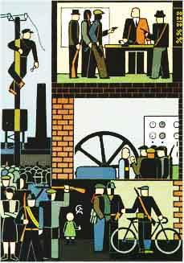

DOSSIÊ: REVOLUÇÃO E CONTRA-REVOLUÇÃO NA RÚSSIA

ÍNDICE:
A Revolução Russa - Maurice Brinton
O Comunismo de Conselhos e a Crítica do Bolchevismo - Cajo Brendel

A Revolta de Kronstadt - Ante Ciliga
Stalinismo e Trotskismo - Paul Mattick
Uma Oposição Leal do Stalinismo:
Trotsky e a Contra-revolução - Max Anger
Plataforma Organizacional - Prefácio ・Primeira Edição Irlandesa
Plataforma Organizacional - Introdução Histórica ・Primeira edição Irlandesa
Plataforma Organizacional - Dielo Truda (Causa Operária)
Polêica entre Malatesta e Makhno em Torno da "Plataforma"- Errico Malatesta e Nestor Makhno
Nossa Organização - Nestor Makhno
Sobre a Disciplina Revolucionária - Nestor Makhno
Sobre a Defesa da Revolução - Nestor Makhno